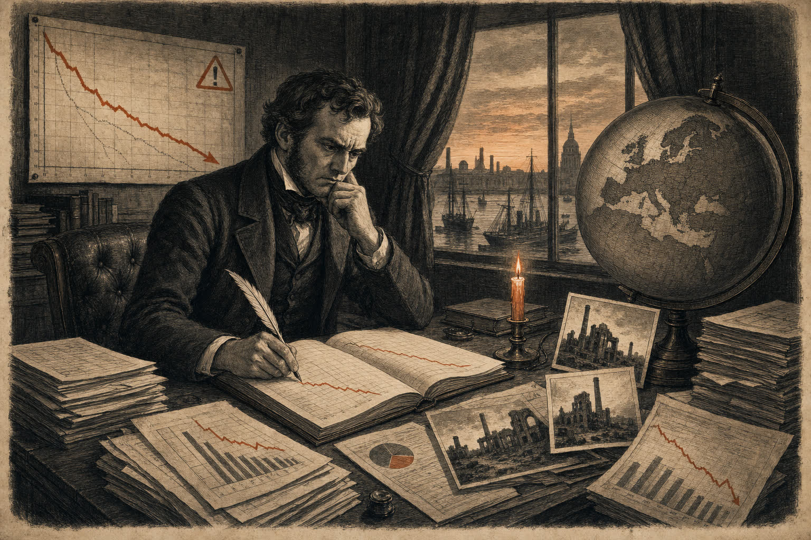
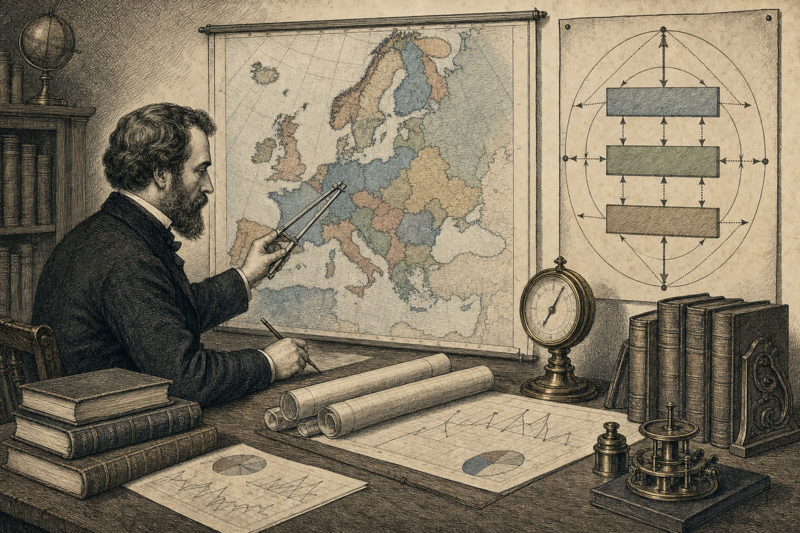

Behind the Numbers
A permanent section for those who want to look behind the data. This is where pieces that go too deep for the main paper land — analyses, reports, thought exercises and empirical underpinnings that feed the main articles.
Continuously updated · Independent · Open vizier
For those who want to see the numbers
The main articles in each edition tell the story. Here you will find the work that lies beneath: the data analyses, the empirical testing, the thought exercises that do not always fit within formal phrasing. Some pieces are personal working documents — we mark these clearly as such. Others are completed analyses based on public sources (CBS, AMECO, OECD).
In this supplement

Is the Netherlands heading towards developing-country status?
Bankruptcies, closures (60× as many as bankruptcies!), employment and de-industrialisation from 2000 to 2026. A data-driven analysis that uncovers patterns the official statistics do not show.

EU: GDP, Real Wages and the Government Multiplier
GDP growth minus wage development minus real government expenditure — what macroeconomic room remains? An empirical underpinning for 27 EU countries based on AMECO data.
More research to follow
This supplement is continuously expanded with new data pieces alongside and in addition to the monthly main paper.